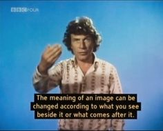
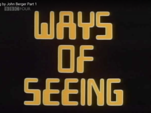
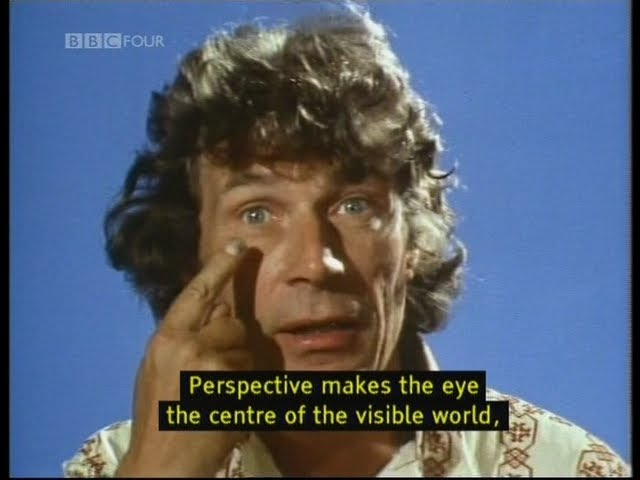
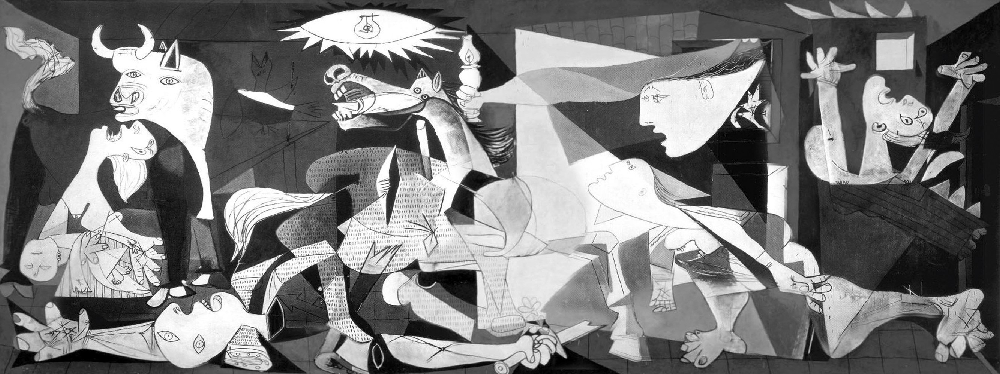
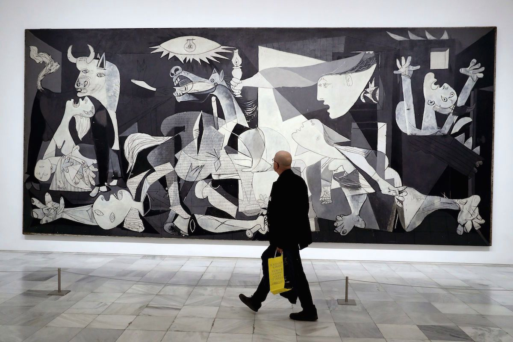

In my Junior year of high school, I studied the painting Guernica by Pablo Picasso for a few weeks in Spanish class. We broke down the sections of the painting while viewing a photocopied version on an 8.5 x 11 sheet of paper. A few months later, I was fortunate enough to travel to el Museo Nacional Centro de Arte Reina Sofía and see the painting for myself. A small, reproduced version of the painting sitting on a desk with voices traveling about the room was how I had become used to seeing Guernica. In la Reina Sofía, it was striking. The painting was massive, carefully hung against a blank white wall, with utter silence surrounding it. Seeing Guernica in this context gave it a completely different feel. The painting spoke for itself rather than a group of uneducated teens trying to assign it meaning.
    